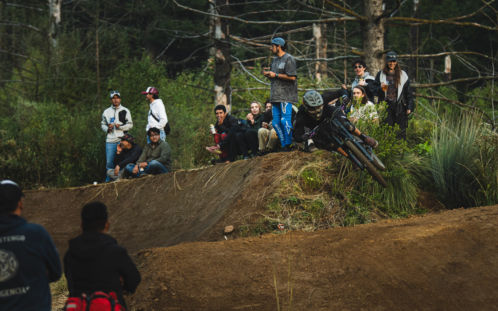
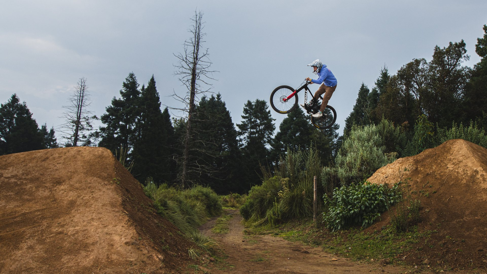
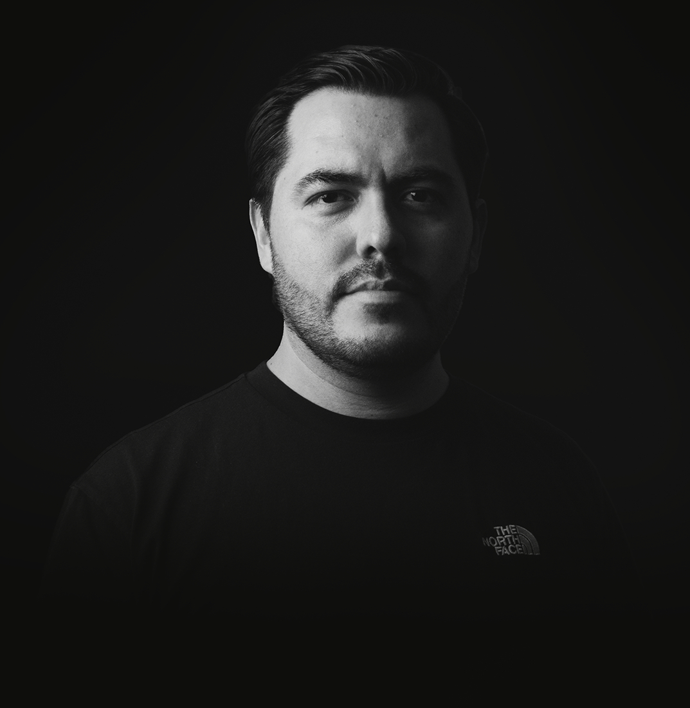

Fotografío el movimiento · CDMX
El momento no vuelve.La foto se queda.
Para quién trabajo

Atletas
01Tu mejor salto, truco o jugada, planeado y bien iluminado, para que lo cuentes siempre.
Marcas
02Tu producto en el momento real del atleta, con derechos de uso claros.
Eventos
03La acción, el grito y la banda, entregados mientras el evento sigue vivo.
Guillermo López
CDMX
Llevo más de 15 años diseñando, y la fotografía me enseñó a mirar distinto: a esperar el instante que el atleta va a querer contar.
También ruedo, así que sé dónde pararme sin estorbar y cuándo pedir otra repetición.
- Base
- Ciudad de México
- Disciplinas
- MTB, BMX, skate y deporte urbano
- Equipo
- Canon 90D · 70-200 · Godox AD200

Nuevos proyectos · CDMX
Sesiones con atletas, contenido para marcas y cobertura de eventos. Cuéntame qué momento quieres que se quede.
[tu correo de foto]- @glowbot.raw
- Servicios
- Atletas · Marcas · Eventos